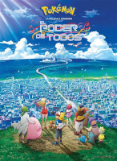

| Nombre/Detalles de Serie |
Capítulos |
Pokémon La Serie Original
Cuenta con 276 capítulos y abarca las primeras cinco temporadas en occidente, se inicio originalmente
en Japón el 1 de abril de 1997
|

TEMPORADA 1: ¡ATRAPALOS YA! (¡YO TE ELIJO! / LIGA AÑÍL)
- ¡Pokémon, Yo Te Elijo!
- Emergencia Pokémon
- Ash Captura Un Pokémon
- El Desafío Del Samurai
- Batalla En Ciudad Plateada
- Clefairy Y La Roca Lunar
- Las Flores Acuáticas De Ciudad Celeste
- El Camino A La Liga Pokémon
- La Escuela De Los Golpes Duros
- Bulbasaur Y La Aldea Secreta
- Charmander, El Pokémon Abandonado
- El Escuadrón De Squirtle
- Misterio En El Faro
- Duelo Eléctrico
- Batalla A Bordo Del Santa Ana
- Naufragio Pokémon
- La Isla De Los Pokémon Gigantes
- La Bella Y La Playa
- Tentacool Y Tentacruel
- El Fantasma Del Pico De La Doncella
- Adiós Butterfree
- Abra Y El Duelo Psíquico
- La Torre Del Terror
- Haunter Contra Kadabra
- Primeape Se Vuelve Loco
- Aromas Pokémon
- La Siesta De Hypno
- Moda Pokémon
- El Pokémon Golpeador
- Hurra Por Magnemite
- ¡Saquen A Esos Diglett!
- El Duelo Pokémon Ninja
- La Gran Carrera
- El Chico Kangaskhan
- La Leyenda De Dratini
- La Banda Del Puente
- La Misteriosa Mansión Ditto
- Soldado Eléctrico Porygon
- Adiós Pikachu
- Los Belicosos Hermanos Eevee
- ¡Despierta Snorlax!
- Duelo En Ciudad Oscura
- La Marcha Del Escuadrón Exeggutor
- El Problema Con Paras
- La Canción De Jigglypuff
- El Ataque Del Pokémon Prehistórico
- Una Operación Chansey
- ¡Santo Matrimonio!
- Tan Cerca Y Aún Tan Farfetch'd
- ¿Quién Se Queda Con Togepi?
- El Jardín Misterioso De Bulbasaur
- Princesa Contra Princesa
- El Héroe Perfecto
- El Caso De La Policía Canina
- Paparazzi Pokémon
- La Prueba Máxima
- El Secreto Del Centro De Entrenamiento
- Descíframe Esto
- Pánico Volcánico
- El Problema De Blastoise
- Misty, La Sirena
- Una Historia De Clefairy
- La Batalla Por La Medalla
- La Hora De Mr. Mime
- Una Navidad Con Jinx
- ¡Perdidos En La Nieve!
- Duelo En El Poké-Corral
- La Solución De La Evolución
- La Pi-kahuna
- Hagan Espacio Para Gloom
- ¡Luces, Cámara, Acción!
- Ve Al Oeste, Meowth
- Dominando Lo Onix-perado
- El Misterio De Pokemopolis
- Malo Hasta Los Huesos
- ¡Todos Prendidos!
- La Primera Ronda Comienza
- Fuego Y Hielo
- La Cuarta Ronda, Tiembla
- Amigos Y Héroes
- Amigos Y Enemigos Por Igual
- Amigos Hasta El Fin

Temporada 1: Peliculas y Extras
- Las Vacaciones De Pikachu (Corto)
- Mewtwo Contraataca + El Origen De Mewtwo (Película+Corto)
- La Noche De Navidad + Juegos Kanga (Cortos)
- ¡Para Ser Un Maestro! (Banda Sonora + La Rockola De Pikachu)

TEMPORADA 2: LIGA NARANJA
- Fiesta De Pánico En Pueblo Paleta
- Un Susto En El Aire
- ¡Peligro Pokébola!
- El Lapras Perdido
- Duelo En La Marea
- Pikachu Se Revela
- El Onix De Cristal
- Pokémon En Rosa
- El Misterio De Kabuto
- Lucha En El Escenario
- Adiós Psyduck
- La Joy De Los Pokémon
- Maniobras En La Isla Ombligo
- Robo De Comida
- Un Barco Lleno De Escalofríos
- Meowth Es El Jefe
- Tracey Se Apasiona
- Un Día Libre
- Duelo En La Isla Mandarín
- ¡Los Pokémon De Ralph Y Emily!
- Emergencia Eléctrica
- La Amenaza Misteriosa
- Misty Encuentra Pareja
- Mi Amigo Pikachu
- Charizard Se Enfría
- La Guerra De Agua Pokémon
- Duelo Por La Comida Pokémon
- Prepárense Para Los Problemas Pokémon
- El Observador Loco
- La Desviación Paralizadora
- ¡Hola, Pómello!
- Entra Dragonite
- ¡Vivan Las Lapras!
- La Patrulla Subterránea
- Reencuentros
- La Rivalidad Revive

Temporada 2: Peliculas y Extras
- Pikachu Al Rescate (Corto)
- Pokémon 2000: El Poder De Uno + El Día De Slowking (Película+Corto)
TEMPORADA 3: LOS VIAJES JOHTO
- El Robo De Totodile
- La Principiante
- El Bosque De Pinsir
- ¡Rueda Pokémon!
- Ilusión Y Confusión
- El Poder De Las Flores
- Entra Spinarak
- El Sufrimiento De Snubbull
- El Pequeño Gran Cuerno
- El Rescate De Chikorita
- La Cascada De La Luna Azul
- El Silbato Cayó
- Mi Amiga Blissey
- Batalla En La Torre Sprout
- Batallando Al Volador Con Fuego
- El Llanto De Marril
- ¡El Arbotanque!
- La Gran Ambición De Charizard
- ¡Sonríe Para Ganar!
- Los Celos De Chikorita
- Amigos Del Clima
- El Superhéroe Secreto
- Simpático Y Lanudo
- Batalla Computarizada
- La Cacería De Cyndaquil
- Una Sombra De Sequía
- Pokebolas Apricorn
- El Duelo Con Los Insectos
- Una Historia Con Farfetch'd
- Bazar De Cambio
- El Escuadrón De Bomberos
- ¡Las Travesuras De Wooper!
- El Túnel Onix
- La Hora De Los Houndour
- El Duelo De Totodile
- Duelos Calientes
- Amor Estilo Totodile
- Un Pokémon Inteligente
- Gruñones Del Bosque
- La Pareja Psíquica
- Los Cazadores De Fortuna

Temporada 3: Peliculas y Extras
- Pikachu Y Pichu (Corto)
- El Hechizo De Los Unown (Película)
- Juegos Invernales (Corto)
- Los Pequeños Ayudantes De Stantler (Corto)
- Problemas En La Gran Ciudad (Corto)
- Los Viajes Johto (Banda Sonora + Pokémon Karaokémon)

TEMPORADA 4: LOS CAMPEONES DE LA LIGA JOHTO
- Una Oportunidad De Oro
- Un Final Feliz
- ¡Tiempo, Aire!
- Atrapen Un Insecto
- ¿Qué Tipo De Pokémon Eres?
- Pokémon Prehistóricos
- ¡Continúa!
- Aventuras En El Castillo
- Equipo En La Batalla
- Una Batalla De Agua Caliente
- Poliwhirl Contra Poliwrath
- La Bella Y El Criador
- Elixir De Amor
- Juego De Poder
- Tiempo De Montaña
- ¡Wobbu-Paliza!
- Duelo De Imitación
- El Problema Con Snubbull
- ¡Ariados, Amigos!
- Alas Y Cosas
- La Ruta De Hierba
- ¡La Compañía De Las Manzanas!
- La Entrega Especial De Houndoom
- Encuentro Con Fantasmas
- De Fantasma En Fantasma
- Problemas Cocinándose
- ¡Todos Esos Brillos!
- La Luz Fantástica
- MentirOSO
- La Foto Del Recuerdo
- Fiebre De Manantial
- Imagen Congelada
- Las Rocas Robadas
- El Engaño De Dunsparce
- Wobbuffet, El Pokémon Descarriado
- Enfermedad Deslumbrante
- Maestros Del Ring
- El Intérprete Pokémon
- ¡Control Total!
- El Arte Pokémon
- La Desilusión De Brock
- Guardianes Eléctricos
- La Nueva Vida De Bayleef
- Natu, El Pokémon Adivino
- El Estallido Del Globo
- La Imagen Del Actor
- ¡Bien Hecho, Rhydon!
- Los Kecleon Saltarines
- El Lago Lucid
- El Oasis Secreto
- Batalla Por La Luz
- Machoke, Machoke Man

Temporada 4: Peliculas y Extras
- Pikachu's Pikaboo (Corto)
- Pokémon Por Siempre: Celebi, La Voz Del Bosque (Película)
- El Dilema De Delibird + El Hombre De Nieve Snorlax (Cortos)
- Mewtwo Regresa (Película Especial)

TEMPORADA 5: LA BÚSQUEDA DEL MAESTRO
- Las Islas Remolino
- Llévame A La Luna
- El Desfile De Los Chinchou
- ¡Un Corsola Travieso!
- ¡Aventura Submarina!
- Octillery Y Sus Amigos
- Duelo De Héroes
- ¡El Duelo Perfecto!
- La Guerra De Los Diglett
- ¡El Robo De Las Alas Plateadas!
- El Misterio Es Historia
- ¡Un Padre Atrapado!
- Una Promesa Es Una Promesa
- El Regreso De Noctowl
- Nervios De Steelix
- ¡Bulbasaur, El Embajador!
- Espeon No Incluído
- ¡Las Campanas De Ho-Oh!
- ¡Pokémon Extremo!
- Tras La Pista Del Criminal
- La Esperada Llegada De Phanpy
- El Regreso Del Equipo Rocket
- Esperando A Un Amigo
- Un Tyrogue Lleno De Problemas
- Xatu Y El Futuro
- Hablando De Evolución
- Furia De Inocencia
- Tan Frío Como Pryce
- ¡Ash Contra Pryce!
- Para Donde Sopla El Viento
- ¡A Algunos Les Gusta El Calor!
- ¡Hocus Pokémon!
- Tan Claro Como El Cristal
- El Mismo Baile Y La Vieja Canción
- ¡Ilumínate!
- ¡Que El Verdadero Profesor Oak Se Ponga De Pie!
- Un Deseo Con Forma De Estrella
- Adivinos Y Ladrones
- ¡Un Gran Entrenamiento!
- ¡Discúlpame Politoed!
- La Cueva Helada
- La Belleza Es Pasajera
- El Robo Del Colmillo
- ¡Grandes Bolas De Fuego!
- Octava Y Última
- ¿Por Qué? ¡Wynaut!
- Sólo Agrega Agua
- Lapras De Lujo
- El Nacimiento De Larvitar
- Entei, El Pokémon Legendario
- Se Busca Un Rey
- Te Estoy Viendo, Elekid
- ¡Eres Una Estrella, Larvitar!
- Dimensión Desconocida
- La Madre De Todas Las Batallas
- Sneasel Y El Fuego Sagrado
- El Portador De La Llama
- Amor Al Estilo Pokémon
- ¡Un Empate!
- Los Lazos Que Unen
- Nada Vence Al Calor
- ¡Jugando Con Fuego!
- La Final De La Liga Johto
- ¡Hasta Pronto Amigos!
- ¡Solos En Hoenn!

Temporada 5: Peliculas y Extras
- Campamento De Pikachu (Corto)
- Héroes Pokémon: Latios Y Latias (Película)
- La Leyenda Del Trueno (Película Especial)
- ¡La Familia Que Lucha Junta Permanece Junta! (Brock)
- El Blues De Cerulean (Misty)
|
POKÉMON: GENERACIÓN AVANZADA
Es la segunda serie del anime, no obstante el título de esta serie continúa siendo «Pocket Monsters» en
la versión japonesa. Los primeros 131 episodios están ambientados en la región Hoenn y basados en
Pokémon Ruby y Sapphire, los 2 primeros videojuegos de la tercera saga principal de videojuegos de la
franquicia Pokémon; mientras que el resto (61 episodios) están basados en la Batalla de la Frontera o
Frente de Batalla del videojuego Pokémon Esmeralda y ambientados en la región Kanto.
|
TEMPORADA 6: FUERZA MÁXIMA
- ¡Hay Que Empezar El Camino!
- ¡Las Ruinas De Hoenn!
- No Hay Un Lugar Como Hoenn
- Un Pokémon Implacable
- Las Primeras Batallas
- El Cazador Furtivo
- El Árbol De Treecko
- Una Cola Explosiva
- El Rescate De Shroomish
- Un Bocado Peligroso
- Una Mordida Para Recordar
- Los Pequeños Lotad
- Todas Las Cosas Brillantes Y Hermosas
- Atrapen Un Wurmple
- Quiero Ir A La Escuela
- Una Batalla Contra Nosepass
- De Camino A Devon
- El Rescate De Wingull
- ¡El Ataque De Los Sharpedo!
- Toma La Ola
- ¿Cuál Wumple Es Cuál?
- Problemas En La Cueva
- Capturando A Corphish
- Un Corphish Fuera Del Agua
- Una Misión Mudkip
- Nuestro Amigo Nuzleaf
- Encuentro De Tres Equipos
- Ver Para Creer
- El Gran Susto De Sableye
- Una Pelea Para Meditar
- La Fuerza Del Géiser
- ¡Abandonen El Barco!
- ¡El Poder De Las Flores!
- El Primer Pokémon
- Ganar, Perder O Empatar
- La Roca Misteriosa
- El Secuestro De Joy
- La Roca De Luz
- La Casa De Los Trucos
- Wattson Y Watt
Temporada 6: Peliculas y Extras
- Gotta Dance! (Corto)
- Jirachi Y Los Deseos (Película)
- ¡No Somos Ángeles! (Equipo Rocket)
- ¡Confrontación En El Corral Oak! (Pueblo Paleta)
- La Medalla Azul Del Valor (Misty, Tracey y Sakura)
- De Meowth Y Los Pokémon (Ciudad Milenio 1)
- ¡El Rapto De Oak! (Ritchie en Pueblo Paleta)
- Gran Meowth, Pequeños Sueños (Ciudad Milenio 2)
- Una Cita Con Delcatty (Misty y Casey)
- Recuerdo De Entrenamiento (Equipo Rocket)
- ¡Celebi Y Joy! (Ritchie)
- Viaje Hacia La Línea De Partida (Pueblo Paleta)

TEMPORADA 7: RETO MÁXIMO
- La Reina De Las Sandías
- Amor A Primer Vuelo
- Una Entrenadora Científica
- La Princesa Y El Togepi
- Un Espejismo Togepi
- Conozcan A Camerupt
- ¡Salvando A Skitty!
- Zangoose Vs. Seviper
- ¡Doble Max!
- Los Secretos Para Ganar
- ¡Bien Hecho, May!
- Escuadrón De Animadores
- Descubriendo Ataque
- La Guerra Por El Meteorito
- ¡Problemas Poéticos!
- Guerra Contra El Sueño
- En Busca De Un Spinda
- Un Torkoal En Problemas
- Manectric Ataca
- ¿Delcatty Te Comió La Lengua?
- El Desastre Del Disfraz
- El Deseo Es El Límite
- Lombre, El Señor Del Agua
- Rescatando A Swablu
- Gulpin Al Ataque
- Explota Y Vete
- ¡Tú Puedes, Ludicolo!
- Un Dilema Doble
- ¡Amor Estilo Petalburgo!
- Equilibrio De Poder
- Ataque En Paquete De Seis
- ¡Mientras Más Pelea, Mejor!
- ¡Histeria De Hierba!
- Pokébolas Locas
- Whiscash Y Ash
- Yo, Yo Mismo Y El Tiempo
- Un Admirador Con Un Plan
- Un Paseo Para Perder
- Las Perlas Son Las Mejores Amigas De Un Spoink
- Convertido En Un Swellow
- Shuppet De La Casa Encantada
- Una Escaramuza De Shroomish
- Amigos Del Injusto Clima
- ¿Ahora Quién Está Volando?
- ¡Batalla En El Cielo Azul!
- ¡Luces, Camerupt, Acción!
- Loco Como Un Lunatone
- El Jardín Del Comer
- ¡Un Susto Que Recordar!
- Pokéblocks Y Moras
- Lecciones En Lilycove
- ¡El Día Del Juicio!
Temporada 7: Peliculas y Extras
- El Destino De Deoxys (Película)
- El Festival De Verano De Pikachu (Corto)
- Reviviendo A Aerodactyl (Gary)
- Luvdisc Es Una Cosa Esplendorosa (Misty, Tracey y Daisy)
- ¡Esos Malvados Electabuzz! (Casey)
- En Búsqueda De La Leyenda (Ritchie)

TEMPORADA 8: BATALLA AVANZADA
PARTE 1: LIGA HOENN
- Perlas De Sabiduría
- El Relicanth Sí Puede Hacerlo
- La Guerra Evolutiva
- Sufrimiento De Entrenamiento
- Capturando A Groudon
- La Batalla De Las Leyendas
- Una Experiencia En Cohete
- Sólido Como Un Solrock
- Asunto De Vanidad
- ¿Dónde Está Armaldo?
- Un Cacturne Puede Empeorarlo
- Claydol, El Gigante
- Un Mawile Enamorado
- Tómalo Y Róbalo
- Absol-uto Desastre
- Nieva Que Nieva Snorunt
- ¿Acaso Escuché A Un Ralts?
- ¡La Última Medalla!
- Ocho No Son Suficientes
- La Revelación De Linoone
- ¿Quién, Qué, Cuándo, Dónde, Wynaut?
- La Fecha Esperada
- Mala Y Envidiosa
- Un Lío En Pacifidlog
- Una Mora Muy Interesante
- De Menos A Morrison
- El Ladrón De La Copa De Listón
- ¡Adelante Viento Plateado!
- Desilusión Y Combinación
- La Rapsodia De Drew
- ¡Naufragio En La Isla!
- La Curiosidad Mató Al Meowth
- Salvados Por Un Beldum
- De Fanfarrones A Victoriosos
- Descargas Y Nudos
- La Disputa Del Juicio
- Decídete O Pierde
- Al Final Del Combate
- Un Equipo En Proyecto
- El Lugar Correcto Y La Rima Correcta
PARTE 2: LA BATALLA DE LA FRONTERA
- Una Cleffadera De Verdad
- El Número Uno: Articuno
- El Símbolo De La Vida
- El Rey Onix
- Rough, Tough, Jigglypuff
- En La Nube De Arcanine
- Cuidando A Psyduck
- ¡Vivan Los Chefs!
- El Gran Dilema De Caterpie
- El Concurso Saffron
- Una Competencia Para Squirtle
- Pasta A La Vista

Temporada 8: Peliculas y Extras
- Lucario Y El Misterio De Mew (Película)
- El Carnaval Fantasma De Pikachu (Corto)

TEMPORADA 9: LA BATALLA DE LA FRONTERA
- El Factor Miedo
- El Dulce Bebé James
- ¡De Tal Brock, Tal Astilla!
- La Rueda De La Frontera
- La Excelente Aventura De May
- Guerrero De Fin De Semana
- Un Viejo Lago
- Tácticas Teatrales
- Cargas Eléctricas
- La Guardiana Del Bosque
- Salvado Desde La Cuna
- El Tiempo Cura Las Heridas
- Reina De La Serpentina
- Cambiando De Rutina
- Harley Ataca De Nuevo
- La Evolución De Grovyle
- Combusken Espontáneo
- Cortando Los Lazos Que Atan
- Explosión A La Vista
- Rey Y Reina Por Un Día
- Curveando La Marea Roja
- Lo Que Se Hace Por Amor
- Tres Jynx Y Un Bebé
- El Gran Juego
- La Segunda Es La Vencida
- 27. ¡La Crisis De Deoxys! (Partes 1 y 2)
- No Todo Lo Que Brilla Es Oro
- Nuevo Plan, Viejo Resultado
- Cerca De La Victoria
- El Viejo Equipo De Siempre
- Remodelando El Gimnasio
- La Batalla Contra El Enemigo
- Slaking-Kong
- May Contra Harley Y Drew
- El Día Del Gran Festival
- En La Zona De Batalla
- Las Locuras De Aipom
- Estrategia Mañana, Comedia Esta Noche
- Duelos De La Selva
- Encantado
- La Inderrotable Levedad De Ver
- ¡El Toque Sanador!
- Reuniendo A La Pandilla De Cuatro
- La Frontera Final
- Una Vez Más En Suspenso
- ¡El Hogar Es Donde Está La Batalla!

Temporada 9: Peliculas y Extras
- Pokémon Ranger Y El Templo Del Mar (Película)
- El Maestro Espejismo (Especial Por El Décimo Aniversario)
- Mundo Misterioso: ¡El Equipo Todo Lo Puede Al Rescate! (Especial)
- Las Aventuras De Pikachu En La Isla (Corto)
|
POKÉMON: DIAMANTE Y PERLA
Es la tercera serie del anime, no obstante el título de esta serie continúa siendo «Pocket Monsters» en
la versión japonesa. Está ambientada en la región Sinnoh y basada en el argumento de Pokémon ediciones
Diamante y Perla, los 2 primeros videojuegos de la cuarta saga principal de videojuegos de la franquicia
Pokémon
|

TEMPORADA 10: DIAMANTE Y PERLA
- Siguiendo El Camino De Una Novata
- ¡Dos Grados De Separación!
- ¡Cuando Los Mundos Pokémon Colapsan!
- ¡El Amanecer De Una Nueva Era!
- Nuevos Amigos
- Diferentes Estilos De Batalla, Diferentes Pokémon
- ¡Entrenando A Piplup!
- ¡Los Farsantes!
- Dando La Bienvenida A Buneary
- ¡No Pueden Con Nosotros!
- ¡Coordinadores En Entrenamiento!
- ¡Un Rival Está Por Llegar!
- ¡Ha Nacido Un Staravia!
- ¡Brock Lo Puede Todo!
- ¡Un Estilo Inesperado!
- ¡Un Estilo Que No Se Copia!
- ¡Salvajes Por Las Calles!
- ¡Sobre Rampardos Ganaremos!
- ¡Una Nueva Conquista!
- ¡El Botín Pokémon!
- ¡Queremos La Evolución!
- ¡Prestando A La Mala!
- ¡Un Steelix Al Ataque!
- ¡Cocinando Una Linda Historia!
- ¡El Súper Poffin Plan!
- ¡Nervios De Concurso!
- ¡Saldando Cuentas Viejas!
- ¡Un Drifloon En El Aire!
- ¡Los Gemelos Campeones!
- Un Tesoro Dulce Y Encantador
- Los De Tipo Hierba Siempre Son Más Fuertes
- Una Dulce Y Enojada Combinación
- ¡Todos Listos Y Disfrazados!
- ¡Buizel, Cuidado Con Tu Camino!
- ¡Un Encuentro Con La Élite Cuatro!
- Una Esfera Secreta De Influencia
- ¡Reserva De Pokémon De Hierba!
- ¡Una Gran Familia Feliz!
- ¡Viaje En Barco De Vapor!
- Entrenamiento Especial
- Entrenando Con Jesselina
- En Compañía De Electrike
- Malicia En El País De Las Maravillas
- ¡Hipo-sis Masiva!
- ¡A La Caza De Los Shieldon!
- ¡La Carrera Laberíntica!
- Liberando A Sandshrew
- Una Lección Para Dawn
- ¡La Gran Batalla Dúo!
- Llamarada De Gloria
- Espíritu De Compañerismo

Temporada 10: Peliculas y Extras
- El Surgimiento De Darkrai (Película)
- El Club De Exploración De Pikachu (Corto)
- Mundo Misterioso: Exploradores Del Tiempo Y La Oscuridad (Especial)

TEMPORADA 11: DIMENSIÓN DE BATALLA
- Enfrenta Tus Temores
- ¡Que Verdes Eran Los Pastos!
- El Intercambio
- La Re-Aparición De Spiritomb
- Bibarel Es El Mejor
- Husmeando En La Montaña
- Visión De Luxray
- Viaje A Lo Desconocido
- Un Buen Equipo
- Gracias Por Los Recuerdos
- Las Aguas Termales
- Tiempos De Cambio
- Un Baño De Arena
- La Estrategia Del Líder Perdido
- Cruzando La Línea De La Batalla
- Triple Oportunidad De Batalla
- Intergaláctico
- Suenan Las Campanas
- El Policía Pokémon Y El Rapto De Riolu (Primera Parte)
- El Policía Pokémon Y El Rapto De Riolu (Segunda Parte)
- Los Caminos Se Cruzan
- Pika Y Goliath
- La Copa Wallace
- Una Batalla Bien Servida
- Bienvenidos Todos Nuestros Héroes
- Compitiendo Entre Amigos
- Estrategia Con Una Sonrisa
- Los Ladrones Que Se La Pasan Robando
- Achimcharado
- La Crema Innata De Los Croagunk
- Una Súper Trayectoria De Poder
- Hambrientos De La Buena Vida
- Derrotando El Miedo Con Miedo
- Llegando Con Estilo
- Los Psyduck Llegaron Ya
- La Academia Pokémon De Verano
- Un Encuentro Cercano
- Ghoul Daze
- Equipo Uno, Equipo Dos, Equipo Rojo, Equipo Azul
- Una Muy Mala Y El Equipo Rocket
- Jugando En Un Campo Superior
- Doc Brock
- Peleando Con La Brecha Generacional
- Perdiendo Su Brillo
- El Malévolo Equipo Galáctica
- Si La Bufanda Te Queda, Póntela
- Reencuentro De Pokémon Y Entrenador
- Ayudando Al Enemigo
- Barry Se La Pasa Peleando
- Protegidos Con Un Escudo
- Cambiándose De Equipo
- Durmiendo Antes De La Batalla
Temporada 11: Peliculas y Extras
- Giratina Y El Guerrero Celestial (Película)
- La Gran Aventura En Hielo De Pikachu (Corto)
- Mundo Misterioso: Exploradores Del Cielo (Especial)

TEMPORADA 12: BATALLAS GALÁCTICAS
- ¡Enciende Tu Rotom!
- Una Estampida Variada
- Asuntos Familiares Antiguos
- Lidiando Con Tipos Defensivos
- Guiando A Un Descarriado
- Acerando La Serenidad
- Salvando Al Mundo De Las Ruinas
- Alegría En La Isla De Los Náufragos
- ¡Agarra El Phione!
- ¡Otro Gabite Muerde El Polvo!
- Robando La Conversación
- El Snorunt Errante
- Fideos Vienen Y Van
- Persiguiendo Una Meta Elevada
- Juicios Y Adulaciones
- El Snover Solitario
- Detenida En Nombre Del Amor
- ¡Viejos Rivales, Trucos Nuevos!
- ¡Sé Honesto Con Tu Pokémon!
- Enfrentando Un Lindo Drama
- Entrenamiento De Salón
- Patinando A La Séptima
- ¡Una Furia Piramidal!
- ¡Pilares De Amistad!
- Congelados En Sus Pasos
- ¡Pedal Hasta El Fondo!
- ¡Estrategias Evolucionadas!
- Aceptando La Derrota
- Promoviendo Un Tangrowth Saludable
- Acabando Con El Juicio Y El Bullicio
- Portal A Las Ruinas
- Tres Lados En Cada Historia
- La Estrategia Comienza En Casa
- Un Final En Falso De Oak
- Trama Histórica Por Lo Desconocido
- Retando A Una Figura Imponente
- Donde Ningún Togepi Fue Antes
- Huevo Revuelto
- Lo Que La Planta Eólica Se Llevó
- Una Rivalidad Digna De Un Gible
- ¡Vestido Para El Éxito De Jess!
- Embolsado Y Etiquetado
- Hazlo Por La Piedra De La Familia
- ¡Pégate A Quien Conoces!
- ¡Desatando La Cadena Roja De Eventos!
- Las Necesidades De Los Tres
- ¡La Batalla Final De Leyenda!
- ¡El Tesoro Es Todo Mío!
- Dominando Los Eventos Actuales
- Entrenamiento De Batalla A Paso Veloz
- Un Meteórico Ascenso A La Excelencia
- Hay Que Conseguir Un Gible

Temporada 12: Peliculas y Extras
- Arceus Y La Joya De La Vida (Película)
- La Gran Aventura Chispeante De Pikachu (Corto)
- Pokémon Ranger: Trazos De Luz (Cortos)

TEMPORADA 13: LOS VENCEDORES DE LA LIGA SINNOH
- Recuperando La Ventaja En Casa
- Corto, Pero Certero
- El Maratón De Rivales
- ¡Sí, Se Trata De Dawn!
- Repitiendo La Presentación
- Enfrentando La Ira Con Fuego
- Piplup Emprende El Vuelo
- ¡Flint Enciende El Fuego!
- La Desaparición De La Torre Marina
- Educando Al Maestro
- Siguiendo En La Cima Por Mí
- Guardia Pokémon: El Rescate De Heatran
- Un Encubrimiento Élite
- El Amanecer De Un Buen Día
- Con La Gracia Más Sencilla
- Enfrentando Dos Dramas Iguales
- ¡Última Llamada, Primera Ronda!
- Los Opuestos Interactúan
- ¡El Inicio - El Festival Circular!
- ¡Una Gran Batalla Que Ganar!
- ¡Por El Amor De Meowth!
- ¡La Octava Maravilla Del Mundo Sinnoh!
- Cuatro Caminos Bifurcan En Un Puerto Pokémon
- En Contra Del Tesoro
- ¡Una Vieja Mezcla De Familia!
- ¡La Liga Desencadenada!
- Buscando Un Paul En Barry
- Entrenando Un Buen Movimiento
- La Estrategia Del Conocimiento De Razas
- Un Rival Muy Agitador
- Enfrentando Un Deshielo En Las Relaciones
- ¡La Frontera Semi-Final!
- ¡Brock, El Salvador!
- Los Recuerdos Se Hacen De Felicidad

Temporada 13: Peliculas y Extras
- Zoroark: El Maestro De Ilusiones (Película)
- La Misteriosa Gran Aventura De Pikachu (Corto)
- Especial de Dawn (Subtitulado)
- Especial de Brock (Subtitulado)
|
POKÉMON: BLANCO Y NEGRO
Es la cuarta serie del anime. El 15 de abril de 2010, TV Tokyo confirmó la conclusión de Pokémon Diamond
& Pearl en otoño de 2010 y asimismo el inicio de una nueva serie basada en los videojuegos Pokémon Negro
y Blanco, que salieron la venta en el mercado japonés el 18 de septiembre. Finalmente, el 23 de
septiembre de 2010 se estrenó en TV Tokyo la cuarta serie de anime basada en Pokémon bajo el nombre de
Pokémon Best Wishes!
Luego de despedirse a Dawn/Maya y despedirse de Brock, Ash emprende otro viaje hacia una nueva región
llamada Unova/Teselia y las islas decolora, donde Ash conoce a sus nuevos compañeros de viaje Iris y
Cilan
|

TEMPORADA 14: BLANCO Y NEGRO
- ¡A La Sombra De Zekrom!
- ¡Entran Iris Y Axew!
- ¡El Pozo De Sandile!
- El Club De Batalla Y La Elección Tepig
- ¡Lideres Triples, Amenazas En Equipo!
- Sueños En El Jardín
- Atrapar A Snivy Es Un Juego Difícil
- Salvando A Darmanitan De La Campana
- La Flor Está En Axew
- Una Batalla Rival Para El Campeón Del Club
- ¡Un Hogar Para Dwebble!
- ¡Aquí Viene El Escuadrón Trubbish!
- ¡Minccino - Limpio Y Prolijo!
- Una Noche En El Museo De Ciudad Nacrene
- ¡La Batalla Según Lenora!
- ¡Revancha En El Gimnasio Nacrene!
- Scraggy, Empollado Para Ser Salvaje
- ¡Sewaddle Y Burgh En El Bosque Azulejo!
- La Revancha De La Conocedora
- ¡Bailando Con El Trío De Ducklett!
- ¡El Mundo Perdido De Gothitelle!
- ¡Una Estampida Venipede!
- ¡Luchando Por El Amor De Los Tipo Insecto!
- ¡Emolga, El Irresistible!
- ¡Emolga Y El Nuevo Cambia-Voltaje!
- ¡Terror En La Mansión Litwick!
- ¡El Camino Del Maestro Dragón!
- ¡La Capara-Concha Perdida De Oshawott!
- ¡Cottonee Enamorado!
- ¡Un OVNI Para Elgyem!
- La Tercera Batalla De Ash Y Trip
- ¡Enfrentando Al Miedo Con Los Ojos Abiertos!
- ¡Iris Y Excadrill Contra La Cazadora De Dragones!
- ¡Debo Atrapar Un Roggenrola!
- ¿Adónde Fuiste, Audino?
- ¡Archeops En El Mundo Moderno!
- ¡Un Conocedor De Peces En Una Competencia Sospechosa!
- ¡Una Historia De Película! ¡Zorua En "La Leyenda Del Caballero Pokémon"!
- ¡Batallas De Reunión En Nimbasa!
- ¡Cilan Contra Trip Y Ash Contra Georgia!
- ¡La Batalla Del Club De Corazones De Furia! ¡Emolga Contra Sawk!
- ¡Batalla De Club Final! ¡El Surgimiento De Un Héroe!
- ¡Las Astutas Tácticas De Meowth!
- Purrloin: ¿Dulce O Traicionero?
- ¡Beheeyem, Duosion Y El Ladrón De Sueños!
- ¡La Pelea En La Montaña De Beartic!
- ¡Crisis En El Subterráneo!
- ¡La Batalla Por El Subterráneo!

Temporada 14: Peliculas y Extras
- Pokémon Negro - Victini Y Reshiram (Película Versión 1)
- Pokémon Blanco - Victini Y Zekrom (Película Versión 2)
- La Historia Del Puente De Verano De Pikachu (Corto)
TEMPORADA 15: DESTINOS RIVALES
- ¡Llega Elesa, Una Líder De Gimnasio Electrizante!
- ¡Batalla! ¡Deslumbrando En El Gimnasio Nimbasa!
- ¡Perdidos En El Rally De Los Sellos!
- ¡Ash Contra El Campeón!
- ¡Un Musical Maractus!
- ¡Las Cuatro Estaciones De Sawsbuck!
- ¡Scraggy Y El Gothita Exigente!
- ¡El Solitario Deino!
- ¡El Poderoso Accelguardián Al Rescate!
- ¡Una Llamada De Amor Fraternal!
- ¡Deteniendo La Ira De Las Leyendas! (Primera Parte)
- ¡Deteniendo La Ira De Las Leyendas! (Segunda Parte)
- ¡Enfrentando Al Rey De Las Minas!
- ¡Crisis En La Cueva Electrorroca!
- ¡La Emoción De La Evolución De Cambio!
- ¡Exploradores De La Ruina Del Héroe!
- ¡Enfrentando Al Bravucón!
- ¡Enfrentando Al Bouffalant!
- ¡Cilan Toma Un Vuelo!
- ¡Una Asombrosa Batalla Aérea!
- ¡Escalando La Torre Del Éxito!
- ¡La Clubexplosión Comienza!
- ¡En Busca Del Clubultimate!
- ¡La Emoción De La Clubexplosión!
- ¡Comandando La Corona Del Clubexplosión!
- ¡Enfrentando A Los Ladrones De Hojas!
- ¡Una Confrontación De Restauración! (Parte 1)
- ¡Una Confrontación De Restauración! (Parte 2)
- ¡Evolución Por Fuego!
- ¡Defendiendo Al Guardián De La Montaña!
- ¡Peligro, Condiciones De Hielo En La Batalla!
- ¡Furia De Conocedores!
- ¡Crisis En La Investigación De Ferroseed!
- ¡Una Fuerza Defensiva Épica!
- ¡Sacudida En El Gimnasio Virbank! (Parte 1)
- ¡Sacudida En El Gimnasio Virbank! (Parte 2)
PARTE 2:
- ¡Todo Por El Amor De Meloetta!
- ¡Piplup, Pansage Y La Reunión De Los Tiempos!
- ¡Expedición A Isl-Onix!
- ¡El Misterio Del Cubchoo Perdido!
- ¡Iris Y El Dragonite Travieso!
- ¡Tirando Por La Copa Junior!
- ¡Enfrentando A La Autoridad Una Vez Más!
- ¡Ash, Iris Y Trip: Y Entonces Fueron Tres!
- ¡Adiós Copa Junior, Hola Aventura!
- ¡El Camino A Humilau!
- ¡Conflictos En La Guardería!
- ¡Meloetta Y El Templo Submarino!
- ¡Unova Y Su Crisis Por Sobrevivir!

Temporada 15: Peliculas y Extras
- Kyurem Contra El Espadachín Místico
- La Serenata De Luz De Luna De Meloetta (Corto)

TEMPORADA 16: AVENTURAS EN UNOVA
- Bellezas En Batalla Por Orgullo y Prestigio
- Introducción Al Equipo De Batalla Doble Aérea y Terrestre
- El Regreso a La Aldea
- Drayden Contra Iris: Pasado, Presente y Futuro
- El Equipo Eevee y La Brigada De Rescate Pokémon
- Se Abre El Telón, Liga Unova
- Misión: Vencer a Tu Rival
- Perdidos En La Liga
- Una Fuerte Estrategia Se Roba El Show
- El Arma Secreta De Cameron
- Una evolución De La Liga Unova
- Nuevos Lugares, Rostros Familiares
- Su Nombre Es N
- Un Nuevo Líder De Gimnasio En El Pueblo
- El Complot Por El Poder Pokémon Del Equipo Plasma
- La Luz Del Rancho Floccesy
- Rescatando a Braviary
- La Patrulla Portuaria Pokémon
- El Fuego De Una Reunión Candente
- La Manipulación Pokémon Del Equipo Plasma
- Secretos Ocultos En La Niebla
- Meowth, Colress y Una Rivalidad De Equipo
- Ash y N: Un Enfrentamiento De Ideales
- El Equipo Plasma y La Ceremonia Del Despertar
- Mas allá De La Verdad y Los Ideales
- Adiós, Unova. Zarpando Hacia Nuevas Aventuras
- Un Peligro Dulce Como La Miel
- Cilan y El Caso Del Purrloin Testigo
- La Coronación Del Rey Caparaconcha
- La Isla De Las Ilusiones
- Atrapa Un Rotom
- Los Piratas De Las Islas Decolora
- Butterfree y Yo
- El Camino Que Lleva Al Adiós
- En Busca De Un Deseo
- El Ovni De La Isla Magnala
- La Reportera De Otra Región
- Misterio En Una Isla Desierta
- Un Pokémon De Diferente Color
- Festejando El Cometa Del Héroe
- Sigue, Gogoat
- El Electrizante Recluta Del Equipo Rocket
- La Supervivencia Del Gimnasio Striton
- Hasta Luego, Mis Mejores Deseos
- El Sueño Continua

Temporada 16: Peliculas y Extras
- Mewtwo y El Preludio Al Despertar (Prologo Al Despertar)
- Genesect y El Despertar De Una Legenda (Pelicula)
- Eevee y Sus Amigos (Corto)
- Cilan y Brock y El Enfado De Gyarados (Especial)
- Iris Vs Clear El Camino Para Ser Maestra Dragon
|
POKÉMON: XY
Es la quinta serie del anime. Luego de despedirse de Iris y Cilan/Millo, Ash emprende un nuevo viaje a
la región Kalos para reunir sus 8 medallas de gimnasio y poder competir en la Liga Pokémon de esa nueva
región, en esta nueva aventura los acompaña Serena, Bonnie/Clem y su hermano Clemont/Lem. Algo que
podemos destacar en esta serie es que podremos ver la megaevolución, que fue introducida en Pokémon X e
Y, videojuegos en los que está basada esta serie del anime.
|

TEMPORADA 17: XY
- Introducción De La Temporada XY
- Kalos, Donde Los Sueños y Lasa Aventuras Comienzan
- Persecución En Ciudad Lumiose
- Una Batalla De Movilidad Aérea
- Una Amistad Asombrasamente Insolente
- Una Tempestuosa Batalla En El Gimnasio Santalune
- Una Batalla Sobre Hielo Delgado
- Al Acecho De La Carrera Rhyhorn
- Estilizando a Furfrou
- Clemont Tiene Un Secreto
- El Embrollo Del Mega Mega Meowth
- Perdido En El Bosque De Bambú
- Atrapa Al Contrabandista Pokémon
- Caos En El Jardin De Niños
- Buscando Refugio De La Tormenta
- Antojo De La Batalla
- Un Electrizante Intercambio
- Una Ráfaga De Sabiduría Ninja
- Despertando a El Gigante Dormilón
- Una Conspiración Para Conquistar
- Desafiando a La Nobleza Del Bastión
- Una Pokevisión De Las Cosas Por Venir
- En Busca Del Oro
- De Vuelta Al Frió
- Un Hogar En El Mar
- Escalando Los Muros
- Una Batalla Con Cualquier Otro Nombre
- Buscando La Flor De Hada
- Los Vínculos De La Evolución
- Héroes - Amigos y Enemigos Por Igual
- Mega Revelaciones
- La Cueva De Los Desafíos
- La Tormenta De Aura
- Llamando Mas Allá Del Aura
- Los Vínculos De La Mega Evolución
- El Campeón Del Bosque
- Batallas En El Cielo
- La Cueva De Los Espejos
- Forjando Amistades En El Bosque
- Verano De Descubrimiento
- Éxitos Del Tercer Día
- Una Vaga Orientación Pokémon
- Luchando Para Llegar Al Salón De La Fama
- Los Orígenes De La Mega Evolución
- Confrontacion En El Gimnasio Shalour
- Herederos y Rivales
- Wiglituff Aquieta El Caos
- Soñando El Sueño de Una Artista
- Una Reunión En El Campus
- Bonnie La Defensora

Temporada 17: Peliculas y Extras
- Diance La Princesa Del Reino De Los Diamantes (Prologo)
- Diance y La Crisálida de la Destrucción (Pelicula)
- Pikachu ¿Que Es Esa Llave? (Corto)

TEMPORADA 18: XY: Expediciones En Kalos
- ¡El camino a la presentacion en pareja!
- ¡Cuando la luz y la oscuridad se enfrentan!
- ¡Un desafío sigiloso!
- ¡Una carrera a casa!
- ¡Enfrentándose al grandioso y malvado plan!
- !Un encuentro resbaloso¡
- !Una para gommy¡
- ¡Derritiendo un pánico helador!
- ¡El verde verde hogar de los tipo planta!
- ¡Bajo el arbol de la promesa!
- ¡Un debut de exhibición!
- ¡Un oasis de esperanza!
- ¡El futuro es ahora, gracias a la determinación!
- ¡Una bifurcación en el camino! ¡Caminos que se separan!
- ¡Luchando con elegancia y una gran sonrisa!
- ¡Buenos amigos, gran entrenamiento!
- ¡Confrontando la oscuridad!
- ¡El momento de la verdad de Lumiose!
- ¡El Mega-Vínculo de Garchomp!
- ¡Defendiendo el hogar!
- ¡Más allá del arcoiris!
- ¡¿Así que tienes un mal día?!
- ¡Una temible hospitalidad!
- ¡Una batalla a la moda!
- ¡Estrategias tipo Hada!
- Rivales ¡Hoy y mañana!
- ¡Un inicio no tan airoso!
- ¡Un relevo en el cielo!
- ¡Fiasco en la frenética fábrica!
- ¡Una exhibición con un encanto fiero!
- ¡El deseo de Rotom!
- ¡Un intercambio en el festival! ¿Despedida en el festival?
- ¡Sobre la montaña de la nieve!
- ¡Aventuras haciendo encargos!
- ¡Reparando un espíritu roto!
- ¡Una fotografía Legendaria!
- ¡La pequeña cuidadora!
- ¡Un viaje al tren de los recuerdos!
- ¡Un divertido hallazgo en las flores!
- ¡Inspiracion de batalla doble!
- ¡Una trivia de presentación!
- ¡Un destino nublado y un brillante futuro!
- ¡Con la vista puesta al futuro!

Temporada 18: Peliculas y Extras
- Se Presenta El Pequeño Genio Hoopa (Prologo)
- Hoopa y un Duelo Histórico (Pelicula)
- Luces, Camara, Pika (Especial)
- Pikachu y La banda (Corto)

TEMPORADA 19: XYZ
- ¡De La A a La Z!
- ¡Cuando El Amor Ataca, Eevee Huye!
- ¡Una Giga Batalla Con Mega Resultados!
- ¡Un Feroz Rito De Iniciación!
- ¡Sueña Un Poquito Conmigo!
- ¡La Leyenda Del Heroe Ninja!
- ¡Un Festival De Decisiones!
- ¡Un Debut De Baile!
- ¡Un Encuentro En La Cueva Terminus!
- ¡Una Conexión Celular!
- ¡Un Encuentro Ventoso!
- ¡Una Fiesta De Baile!
- ¡El Encuentro De Dos Sendas!
- ¡Una Operación Explosiva!
- ¡Un Parteaguas En El Bosque!
- ¡Elecciones De Clase Maestra!
- ¡Una Furia Electrizante!
- ¡La Llave Del Respeto!
- ¡La Clase Maestra Entra En Sesión!
- ¡Una Presentación De Camino Hacia El Futuro!
- ¿Perfecta De Verdad?
- ¡Luchando a Todo Volumen!
- ¡La Prueba De La Sincronicidad!
- ¡Haciendo Amigos e Inspirando Villanos!
- ¡Un Combate De Investigación Con La Campeona!
- ¡Batalla Sorpresiva Con Máxima Fuerza!
- ¡Un Campo De Batalla Helado!
- ¡Viendo El Bosque a Través De Los Arboles!
- ¡Rompiendo El Hielo!
- ¡Un Diamante En Bruto!
- ¡Un Arsenal De Asombrosos Artefactos!
- ¡Una Liga Para Ash!
- !Una Valiosa Experiencia Para Todos!
- ¡Análisis Contra Pasión!
- ¡Una Rivalidad Fascinante!
- ¡Pasión En la Liga Kalos y El Origen De Flare!
- ¡La Final No Es Para Los Débiles!
- ¡Hacia Un Intenso Final!
- ¡Una toma De Poder En La Torre!
- ¡Sueños Que Se Desmoronan!
- ¡El hHroe Correcto Para El Trabajo Correcto!
- ¡Sacudiendo Las Defensas De Kalos!
- ¡Formando Una Unión Más Perfecta!
- ¡Luchando Desde Cero!
- ¡El Primer Día Del Resto De Tu Vida!
- ¡Enfrentando Las Necesidades De Todos!
- ¡Hasta Competir Otra Vez!
- Especial]: ¡La Leyenda De X, Y, Z!

Temporada 19: Peliculas y Extras
- Volcanion y La Maravilla Mecánica (Pelicula)
- Clemont y Cilan, El Duo Mas Fuerte (Corto)
|
Pokémon: Sol y Luna
Es la sexta serie del anime. En esta serie Ash está viviendo aventuras con sus compañeros de clase:
Lulú, Kiawe, Nereida, Lylia y Chris por la región de Alola.
|

TEMPORADA 20: SOL Y LUNA
- ¡Alola a Una Nueva Aventura!
- ¡El Reto Del Guardián!
- ¡Cargando El Dex!
- ¡Primera Captura En Alola, Al Estilo Ketchum!
- ¡Ánimo! ¡Vamos, Popplio!
- ¡Aventura En El Supermercado!
- ¡Por Eso Litten Es Un Ladrón!
- ¡El Desafío De Lillie!
- ¡Derrotar Al Pokémon Dominante!
- ¡Prueba y Complicación!
- ¡Kiawe Tenia Una Granja!
- ¡El Sol, El Susto y La Guarida Secreta!
- ¡Corriendo Hacia Un Gran Evento!
- ¡Conociéndote Mejor!
- ¡Rockeando En La Colina Clawmark!
- ¡Una Burbujeante Aventura!
- ¡Un Caso claro Como El Cristal!
- ¡En Busca Del Condimento!
- ¡Una Revancha De Guardián!
- ¡Promesas De Compañero!
- ¡Un Viaje Acaba, y Otro Comienza!
- ¡La Escalofriante Búsqueda De Una Pala!
- ¡Se Reune La Banda!
- ¡La Exhibición De Alola!
- ¡Una Riña Entre Equipos!
- ¡Adiós Sophocles!
- ¡Una Deslumbrante Rivalidad!
- ¡Bola Baja Al Estilo Béisbol Pokémon!
- ¡Llevados a La Tierra Del Sueño!
- ¡Cambiando De Parejas!
- ¡La Encantadora De La Isla!
- ¡Búsqueda Del Tesoro, Estilo Akala!
- ¡Un Gran Cielo y Un Pequeño Pececito!
- ¡La Hora De La Verdad Suprema!
- ¡Un Favor Con Sabor a Curry!
- ¡Prueba y Determinación!
- ¡Saliendo De Las Ruinas De La Vida!
- ¡Mimikyu Desenmascarado!
- ¡Mallow y El Maestro Del Bosque!
- ¡Globos, Brionne, y Belicosidad!
- ¡Una Carrera Electrificante!
- ¡Alola, Kanto!
- ¡Cuando Las Regiones Se Encuentran!

Temporada 20: Peliculas y Extras
- Pokémon Yo Te Elijo (Pelicula)

TEMPORADA 21: SOL Y LUNA: Ultra Aventuras
- Un encuentro de ensueño!
- Ahora lo ves, ahora no lo ves!
- Guardando las apariencias!
- Una advertencia enmascarada!
- La noche de las mil poses!
- Misión: Recuperar memoria!
- La venganza de Faba!
- Determinación familiar!
- Revelación legendaria!
- Un rescate no deseado!
- Diez millones de razones para luchar!
- La nueva aventura de los profesores!
- Deja a los Pokémon dormilones en paz!
- RotomDex no puede evitarlo!
- Intenta no llorar!
- Probando lo dulce con lo agrio!
- Iniciando una competencia de altura!
- Una misión de ultra urgencia!
- Actuando fiel a la forma!
- Traspasando los ardientes límites!
- Atrayendo miradas y entrenando duro!
- Remate en el esquema!
- Amor a primer giro!
- Experiencia laboral... estamos contratando!
- Despega, nave brillante!
- La joven llama defensora!
- Atrapando a Lana!
- Amarga dulzura!
- No quieres darme un aro Z?
- La prueba de un tipo rudo!
- Entrenamiento perezoso!
- Una batalla por encargo!
- Guiando el despertar!
- Un giro y un estallido!
- Una inolvidable lluvia de meteoros!
- Batalla bajo presión en la cueva!
- Una nueva flama royal enciende!
- Danza de evolución!
- Faba, encogiste a los niños!
- Los sentimientos de Poipole!
- Mira antes de saltar!
- Yo elijo vacaciones Pokémon!
- Llenando la luz de oscuridad!
- Una oscuridad envolvente!
- El prisma entre la luz y la oscuridad!
- Asegurando el futuro!
- El pikagrupo Pokemon!
- El otro enmascarado Royal?

Temporada 21: Peliculas y Extras
- Pokémon: El Poder De Todos (Película)

TEMPORADA 22: SOL Y LUNA: Ultra Legendas
- Lilliel y el cetro de Alola!
- Una casa embrujada para todos!
- Una chispeante confusión!
- Stufful y el equipo Rocket!
- Un nuevo rival, el nieto de un Kahuna!
- Luces brillantes, grandes sueños!
- Bienvenido Eevee!
- Batalla contra el gigante!
- Amistades Paralelas!
- Alola, Alola!
- Corazón de fuego, corazón de piedra!
- Una investigación picante!
- Confrontación en la isla Poni!
- Entrenamiento evolutivo!
- Corre, Kiawe, corre!
- Memorias en la niebla!
- Un gran debut!
- Mantén los ojos en la bola!
- Muéstrame el metal!
- Una amistad con Meltan!
- El momento de Magikarp!
- La bella y el Meowth!
- El portador de destrucción!
- La princesa secreta!
- Lo que la brisa se llevó!
- Apuntando al piso más alto!
- Nueva percepción a máxima velocidad!
- Rescate marino legendario!
- Una receta para el éxito!
- Espiando para el jefe!
- El ardiente campamento de entrenamiento!
- Viviendo al filo del peligro!
- Un encuentro inesperado más allá del tiempo!
- La emocionante aventura de Pikachu!
- Persiguiendo recuerdos, creando sueños!
- Atacantes y defensores en la Liga Pokémon!
- Batalla Royal 151!
- Amigas y rivales!
- El campo de batalla del amor y la verdad!
- dmiración por Decidueye: ¡Estrategia de imitación!
- Batalla aérea!
- El camino a la semifinal!
- Los últimos cuatro!
- La competencia está que arde!
- La sabiduría de no huir!
- Rivales finales!
- La llegada del campeón!
- Combate de movimientos Z!
- Exhibición desenmascarada!
- Una batalla espectacular!
- Ardientes sorpresas!
- Un movimiento Z para toda ocasión!
- Soñando con el sol y la luna!
- Gracias, Alola! ¡El viaje continúa!
Temporada 22 Peliculas y Extras
- Pokémon: Mewtwo Contraataca Evolucion (Película)
|
Pocket Monsters
Pokémon, se emite en Japón bajo el título de Poketto Monsutā? es la séptima serie del anime, y parte de
la octava generación de la franquicia titulada "Espada y Escudo", aunque incluye elementos basados en
Pokémon Go.
La fecha de estreno en Japón fue el 17 de noviembre de 2019.
|
TEMPORADA 23: Pokemon (Pocket Monsters)
- ¡Nace Pikachu!
- ¡Ash y Gō, vamos por Lugia!
- ¿Ivysaur es misterioso verdad?
- ¡Vamos a Galar! ¡¡El encuentro con Scorbunny!!
- ¿¡Snorlax se vuelve enorme!? ¡¡El misterio del Dinamax!!
- ¡Atrapa muchos Pokémon! ¡¡El camino a Mew!!
- ¡Hoenn, región de feroces batallas! ¡¡Desafía la batalla de la frontera!!
- ¡No pierdas, Piplup! ¡¡La carrera de hielo a la deriva en Sinnoh!!
- ¡La promesa que hicimos ese día! ¡¡La leyenda Ho-Oh de Johto!!
- ¡El paraíso de Dragonite, la prueba de Dragonair!
- Koharu, Yamper y a veces también Gengar
- ¡Batalla Dinamax! ¡¡Lionel, el más grande de todos!!
- ¡Ash contra Lionel! ¡¡Camino al más fuerte!!
- Primera vez en Unova/Teselia! ¡¡Incursión Dinamax en las ruinas!!
- ¿Día de nieve, donde está el hueso de Cubone?
- ¡Ash está maldecido...!
- ¡Scorbunny, usa patada ígnea! ¡¡Entrenamiento del mañana!!
- ¡Ash participa! ¡¡El Campeonato Mundial Pokémon!!
- ¡Yo soy Ditto!
- ¡Persigan sus sueños! ¡¡Ash y Go!!
- ¡Da en el blanco, aura! ¡¡Ash y el huevo misterioso!!
- ¡Adiós, Raboot!
- ¡Pánico masivo! ¡¡Parque Cerezo!!
- ¡Descansa, Equipo Rocket!
- ¡Un festival de batalla explotando con vida! ¡¡VS Mega Lucario!
- ¡Salpica, Magikarp! | ¡Corónate, Slowking!
- ¡La leyenda de los héroes! ¡El combate definitivo de Lionel!
- Sobble solloza
- ¡Celos electrizantes! Los sentimientos de Yamper
- El Pikachu reacio y el Mr. Mime exasperado
- La escama bella de Feebas
- Celebi: Una promesa eterna
- ¿Quieres intercambiar Pokémon?
- ¡Judith, la luchadora solitaria! ¡¡La amenaza de Grapploct!!
- Captura a Pikachu
- ¡Ash y Goh, arrastrándose desde el bucle arena!
- ¡Estoy de vuelta, encantado de conocerte, Alola!
- ¡Pokémon fósiles!
- ¡Ash contra Judith! ¡¡Superando la octopresa!!
- ¡Contra Zapdos! ¡Una incursión legendaria!
- a) La gran operación de doblaje de Pikachu b) Mitad Marshtomp
- Espada y Escudo I - Bosque Oniria
- Espada y Escudo II - Negra Noche
- Espada y Escudo III - Eternatus
- Espada y Escudo IV - La espada y escudo definitivos
El resto de los capítulos no han salido
TEMPORADA 23: Pokemon Viajes! (Pocket Monsters)
- ¡Presentando a Pikachu!
- ¿Leyenda? ¡Vamos! ¿Amigos? ¡Vamos!
- ¡La misteriosa torre de Ivysaur!
- ¡Enfrentando a Scorbunny!
- ¡El alucinante Dynamax!
- ¡El camino de vuelta a Mew!
- ¡Presentando la Copa Flauta!
- ¡La Carrera Iceberg de Sinnoh! (Estreno 23 noviembre 2020)
- ¡Encontrando una leyenda!
- ¡Una prueba en el paraíso!
- El mejor amigo... ¡La peor pesadilla!
El resto de los capítulos no se han anunciado todavía
Temporada 23 Peliculas y Extras
POKEMON ALAS DEL CREPUSCULO (Mini Serie)
- La Carta
- Entrenamiento
- Compañero
- Olas Del Atardecer
- La Asistente
- Claro De Luna
- El Cielo
|